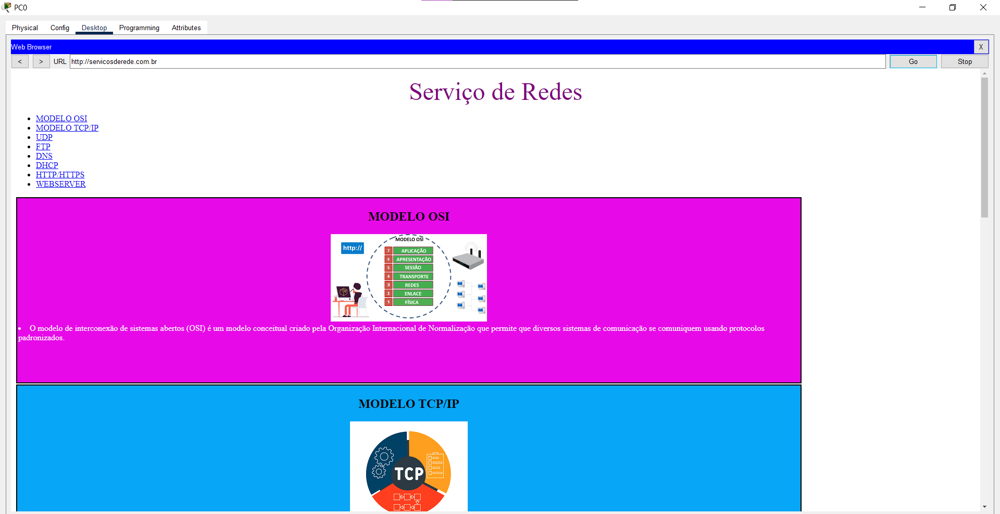

O modelo de interconexão de sistemas abertos (OSI) é um modelo conceitual criado pela Organização Internacional de Normalização que permite que diversos sistemas de comunicação se comuniquem usando protocolos padronizados.
MODELO TCP/IP
TCP/IP é um conjunto de protocolos que possibilita a comunicação entre computadores e servidores, formando a Internet. Ele combina o Protocolo de Controle de Transmissão (TCP), responsável pela transmissão de dados, com o Protocolo de Internet (IP), que identificar os computadores e servidores.
UDP
O User Datagram Protocol (UDP) é um protocolo de Internet mais simples e sem conexão, no qual os serviços de verificação e recuperação de erros não são necessários.
O UDP é mais bem usado para transmissão de dados ao vivo e em tempo real, quando a velocidade é mais importante do que a confiabilidade.
O UDP é usado nessa transmissão de dados de voz e vídeo, tornando mais fluido e rápido o envio de pacotes.
O UDP é eficiente para o tipo de transmissão de rede de broadcast e multicast, como já foi exemplificado anteriormente. O TCP é usado principalmente em HTTP, HTTPs, FTP, SMTP e Telnet. Enquanto o UDP é usado em DNS, DHCP, TFTP, SNMP, RIP e VoIP
FTP
é um protocolo de rede para a transmissão de arquivos entre computadores. Dentro do conjunto TCP/IP (Transmission Control Protocol/Internet Protocol), ele é um protocolo da camada de aplicação para o download e upload de arquivos em conexões do tipo cliente/servidor.
O FTP (File Transfer Protocol) ou Protocolo de Transferência de Arquivos, em português, é um protocolo usado para transferir arquivos por uma rede de computadores, desde uma local à internet. Basicamente, permite a troca de arquivos entre dois computadores de modo direto, em que um ganha acesso às pastas do outro.
O FTP é imprescindível para que o site em WordPress funcione corretamente, para que o usuário consiga realizar a transferência de arquivos e resolver erros e problemas que eventualmente ocorram.
DNS
O modelo de interconexão de sistemas abertos (OSI) é um modelo conceitual criado pela Organização Internacional de Normalização que permite que diversos sistemas de comunicação se comuniquem usando protocolos padronizados.
O DNS (Domain Name System – Sistema de nome de domínio) converte nomes de domínio legíveis por humanos (por exemplo, www.amazon.com) em endereços IP legíveis por máquina (por exemplo, 192.0.2.44).
usar um bom servidor DNS significa que sua navegação pode ficar mais rápida e segura. Muitos serviços disponibilizam recursos de segurança, como detecção de sites falsos ou infectados. Também podem fornecer um sistema de proteção parental no qual sites de conteúdo adulto, por exemplo, são bloqueados.
DHCP
O protocolo DHCP é um protocolo de cliente/servidor que fornece automaticamente um host IP (Protocolo de Internet) com seu endereço IP e outras informações de configuração relacionadas, como a máscara de sub-rede e o gateway padrão.
O DHCP (em português: "Protocolo de Configuração Dinâmica de Endereços de Rede") é capaz de sincronizar automaticamente as configurações de rede em todos os computadores por meio de um servidor central. Este serviço é utilizado em várias situações, como uma rede em casa com vários computadores ou em uma empresa.
O serviço de DHCP é um recurso de muito importância quando se trata de uma rede com muitos computadores, o DHCP facilita a administração e distribuição de endereços IP para os computadores da rede.
HTTP/HTTPS
A sigla HTTPs significa Hypertext Transfer Protocol Secure, ou Protocolo de Transferência de Hipertexto Seguro. O termo é muito parecido com a conhecida sigla HTTP, mas com a diferença do “s” de segurança incluído no final — o que faz toda a diferença, como veremos a seguir.
O HTTPS é uma sigla para Hypertext Transfer Protocol Secure. Essa é uma versão de protocolo idêntica ao HTTP, com a diferença de ser sobre uma camada totalmente SSL.
O https (Hypertext Transfer Protocol Secure ou Protocolo de Transferência de Hipertexto Seguro) é um protocolo de comunicação da Web que protege a integridade e a confidencialidade dos dados trocados por meio de comunicação criptografada.
WEBSERVER
Um web server é um sistema computacional que hospeda e fornece acesso aos conteúdos e aplicações através da internet. Geralmente contratado como um serviço, esse servidor recebe e processa as solicitações feitas por navegadores através de protocolos de rede como o HTTP ou HTTPS.
Em um servidor web, o servidor HTTP é responsável por processar e responder as requisições recebidas. Ao receber uma requisição, um servidor HTTP primeiramente confirma se a URL requisitada corresponde ao arquivo existente. Se confirmar, o servidor web envia o conteúdo do arquivo de volta ao navegador.
Um servidor que presta esse tipo de serviço pode ser um computador físico ou instância de um datacenter, que armazena e disponibiliza o conteúdo para ser acessado por meio da internet
PRINT

Aqui é um print do meu site funcionando no packet tracer.